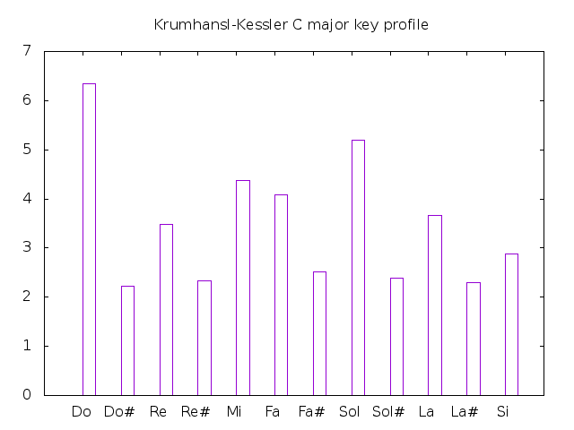
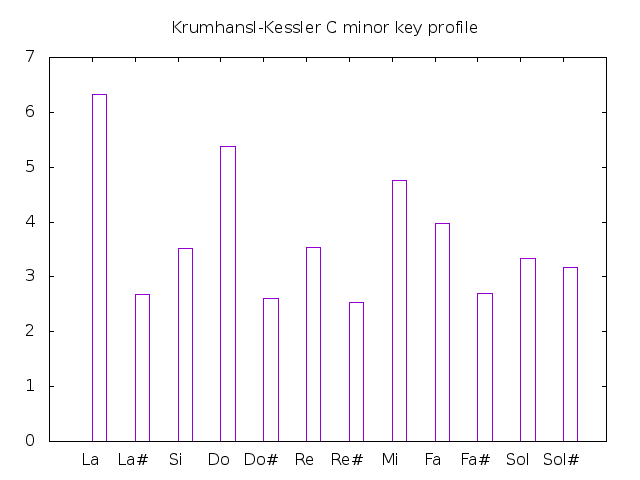
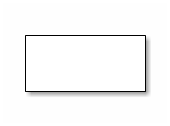
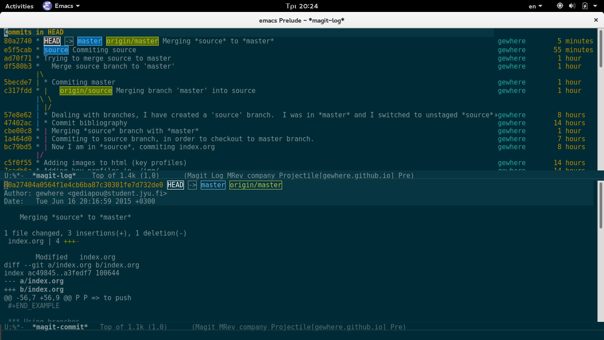

Notes about programming tools
Table of Contents
1 About
These are personal notes, if anyone finds this documentation helpful I will be glad too. I adopt this template from Sacha Chua, and it is written in Orgmode. You can find the orgmode and html files on github repository here.
2 Github
I am learning how to use github, it's pretty handy, just needs some time and repetitive practice. Git documentation is available here. The basic steps are below:
2.1 Git locally
You can use git only locally, though one of the main concept behind git and version control systems is that of collaborative coding.
git init # initialize a folder .git/ # create a file touch newfile # Ctrl+D to save and exit git status # now newfile is untracked git add newfile # to bring file in the staged level git commit -m 'Initial commit' # to make file ready for push
Branching is a core concept for handling big programming projects.
git brach NewBranch # creates a new branch
git branch # returns the working branch
git checkout NewBranch # you are now in the NewBranch
touch newfile # create a newfile in the NewBranch
# this file does not exists in the working directory
# unless you 'git merge'
git checkout master # the master branch is by default the branch that git initialise
git merge NewBranch # at this point the newfile appears
2.2 Git publicly
When you git clone a repository to your hard disc, you clone this from a remote.
git remote # this should return 'origin' git remote -v # returns the online repository git push origin master # git asks for credentials
3 Orgmode
I am using GNUPLOT to plot orgmode's tables.
(local-set-key "\M-\C-g" 'org-plot/gnuplot)
3.1 Org-tables and GNUPLOT
The examples below are the key profiles of Krumhansl-Kessler probe-tone empirical research, as presented by Tamperley (1999).
I use org-plot installed via M-x package-install RET gnuplot. I have also added gnuplot to babel languages.
(org-babel-do-load-languages 'org-babel-load-languages '((gnuplot . t)))
3.2 Org-tables
The examples below are the major and minor profiles of Krumhansl-Kessler key-finding algorithm based on the probe-tone technique, as presented by Tamperley (1999).
#+PLOT: title:"Krumhansl-Kessler C major key profile" ind:1 deps:(2) type:2d with:histograms set:"yrange[0.0:7.0]" #+PLOT: file:"~/code/learn-git/gewhere.github.io/img/major.png" #+TBLNAME:major-key | Key | | |------+------| | Do | 6.35 | | Do# | 2.23 | | Re | 3.48 | | Re# | 2.33 | | Mi | 4.38 | | Fa | 4.09 | | Fa# | 2.52 | | Sol | 5.19 | | Sol# | 2.39 | | La | 3.66 | | La# | 2.29 | | Si | 2.88 |

| Key | |
|---|---|
| La | 6.33 |
| La# | 2.68 |
| Si | 3.52 |
| Do | 5.38 |
| Do# | 2.60 |
| Re | 3.53 |
| Re# | 2.54 |
| Mi | 4.75 |
| Fa | 3.98 |
| Fa# | 2.69 |
| Sol | 3.34 |
| Sol# | 3.17 |

3.3 Org-tables and id
I am importing values that I have calculated in grades.org file (link). The id value must be unique. You can create a unique id with M-x org-id-get-create.
3.3.1 Get values from file
The source code is as folows:
| Name | Grade | |-------+---------| | _ | grade01 | | Nick | 8 | | _ | grade02 | | Brad | 6 | | _ | grade03 | | Marie | 8 | #+TBLFM: $grade01 = remote(grades-overall, $overall01);%.0f::$grade02 = remote(grades-overall, $overall02);%.0f::$grade03 = remote(grades-overall, $overall03);%.0f
3.3.2 Append orgmode tables
#+name: table-names - tbl1 - tbl2 #+name: tbl1 | a | 1 | | b | 2 | |---+---| #+name: tbl2 | c | 3 | | d | 4 | |---+---| #+BEGIN_SRC emacs-lisp :var table-names=table-names (mapcan #'org-babel-ref-resolve table-names) #+END_SRC #+RESULTS: | a | 1 | | b | 2 | |---+---| | c | 3 | | d | 4 | |---+---|
3.4 Org-babel
Babel calls the function org-babel-execute-src-block. The default value of #+RESULTS: can be changed using org-babel-results-keyword. For example:
#+BEGIN_SRC emacs-lisp (progn (setq org-babel-results-keyword "name") (print "Hello!")) #+END_SRC
Inline source code can be written as src_lang[args]{code}. For example, highlight this source code src_emacs-lisp{(+ 1 1)} and press C-c C-c, it will result to 2. A different way to interpret emacs-lisp source code inline is to write the expression as an orgmode link using the prefix elisp:(<code expression>) and evaluate the source code using C-c C-o, just like you open a link. For example:
[[elisp:(org-agenda)]]
3.4.1 ditaa
Locate your path to ditaa.jar in your init file like this (setq org-ditaa-jar-path "/path/to/ditaa.jar).
#+begin_src ditaa :file ./img/hello-ditaa.png
+-----------+
| |
| |
| |
+-----------+
#+end_src

4 Emacs
4.1 Using Magit
Magit is an emacs package with which you can handle git more interactively. With following steps you can push your code on github. With M-x magit-status magit opens a buffer which tracks your activity. In this buffer you can see your local path to the working directory, your remotes, and the last commit online (Head).
At the top of your files in the magit's buffer there is a button like text region which says either Unstaged changes for files that are untracked, either Staged Changes for files that are in the staged level, or Unpushed commits.
M-x magit-statusORC-x g
s => to stage c c => to commit P P => to push
4.1.1 Using branches
- By default git uses a
masterbranch. To switch to a different branch (let the name of the branch source)M-x magit-statusandb, andbfor checkout. - To apply the changes of
sourcebranch tomaster, checkout to master branch and merge. Be sure that you don't have any unstaged changes. - After this step your changes have been applied to
masterbranch and you are ready tostageandcommitthem.

5 Python
5.1 repr()
A python example for %r.
# I am not sure why in this case the second backslash is added repr1 = "\%r" repr2 = "\\r" print "This is an object representation %r" % repr1 print "Also this is an object representation %r" % repr2